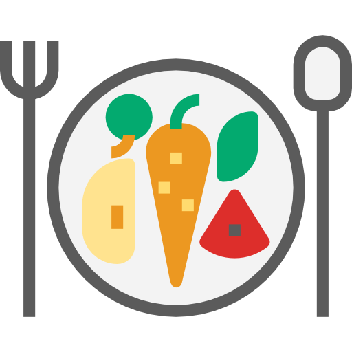

Dieta de mantenimiento
La dieta de mantenimiento de peso es un tipo de dieta que se utiliza para mantener el peso después de haber alcanzado un objetivo de pérdida de peso. El objetivo principal de esta dieta es mantener un equilibrio entre la ingesta y el gasto calórico para no aumentar o disminuir de peso.
